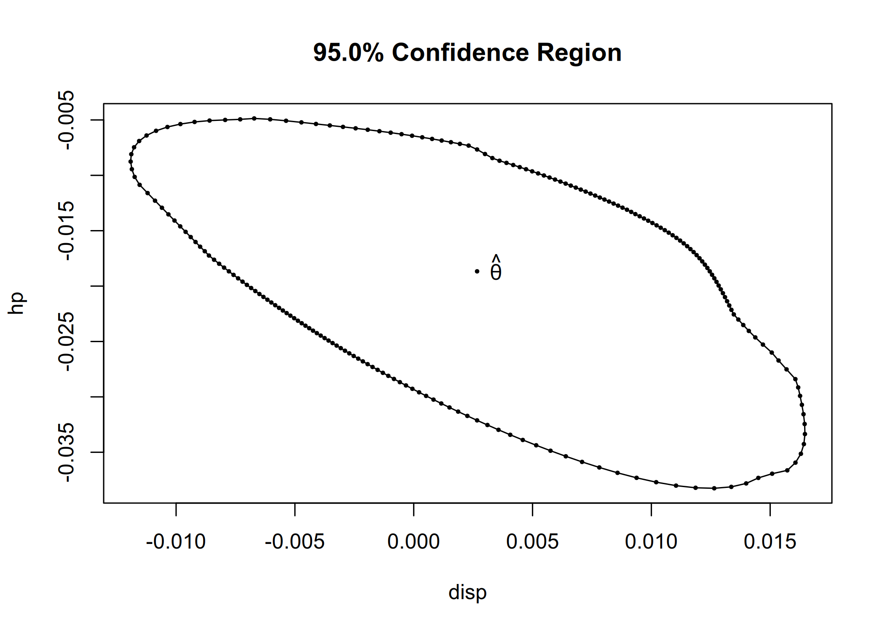

Overview
melt provides a unified framework for data analysis with empirical likelihood methods. A collection of functions is available to perform multiple empirical likelihood tests and construct confidence intervals for various models in ‘R’. melt offers an easy-to-use interface and flexibility in specifying hypotheses and calibration methods, extending the framework to simultaneous inferences. The core computational routines are implemented with the ‘Eigen’ ‘C++’ library and ‘RcppEigen’ interface, with ‘OpenMP’ for parallel computation. Details of the testing procedures are provided in Kim, MacEachern, and Peruggia (2023). The package has a companion paper by Kim, MacEachern, and Peruggia (2024). This work was supported by the U.S. National Science Foundation under Grants No. SES-1921523 and DMS-2015552.
Installation
You can install the latest stable release of melt from CRAN.
install.packages("melt")You can install the development version of melt from GitHub or R-universe.
# install.packages("pak")
pak::pak("ropensci/melt")
install.packages("melt", repos = "https://ropensci.r-universe.dev")Main functions
melt provides an intuitive API for performing the most common data analysis tasks:
-
el_mean()computes empirical likelihood for the mean. -
el_lm()fits a linear model with empirical likelihood. -
el_glm()fits a generalized linear model with empirical likelihood. -
confint()computes confidence intervals for model parameters. -
confreg()computes confidence region for model parameters. -
elt()tests a linear hypothesis. -
elmt()performs multiple testing simultaneously.
Usage
library(melt)
set.seed(971112)
## Test for the mean
data("precip")
el_mean(precip, par = 30)
#>
#> Empirical Likelihood
#>
#> Model: mean
#>
#> Maximum EL estimates:
#> [1] 34.89
#>
#> Chisq: 8.285, df: 1, Pr(>Chisq): 0.003998
#> EL evaluation: converged
## Linear model
data("mtcars")
fit_lm <- el_lm(mpg ~ disp + hp + wt + qsec, data = mtcars)
summary(fit_lm)
#>
#> Empirical Likelihood
#>
#> Model: lm
#>
#> Call:
#> el_lm(formula = mpg ~ disp + hp + wt + qsec, data = mtcars)
#>
#> Number of observations: 32
#> Number of parameters: 5
#>
#> Parameter values under the null hypothesis:
#> (Intercept) disp hp wt qsec
#> 29.04 0.00 0.00 0.00 0.00
#>
#> Lagrange multipliers:
#> [1] -260.167 -2.365 1.324 -59.781 25.175
#>
#> Maximum EL estimates:
#> (Intercept) disp hp wt qsec
#> 27.329638 0.002666 -0.018666 -4.609123 0.544160
#>
#> logL: -327.6 , logLR: -216.7
#> Chisq: 433.4, df: 4, Pr(>Chisq): < 2.2e-16
#> Constrained EL: converged
#>
#> Coefficients:
#> Estimate Chisq Pr(>Chisq)
#> (Intercept) 27.329638 443.208 < 2e-16 ***
#> disp 0.002666 0.365 0.54575
#> hp -0.018666 10.730 0.00105 **
#> wt -4.609123 439.232 < 2e-16 ***
#> qsec 0.544160 440.583 < 2e-16 ***
#> ---
#> Signif. codes: 0 '***' 0.001 '**' 0.01 '*' 0.05 '.' 0.1 ' ' 1
cr <- confreg(fit_lm, parm = c("disp", "hp"), npoints = 200)
plot(cr)
data("clothianidin")
fit2_lm <- el_lm(clo ~ -1 + trt, data = clothianidin)
summary(fit2_lm)
#>
#> Empirical Likelihood
#>
#> Model: lm
#>
#> Call:
#> el_lm(formula = clo ~ -1 + trt, data = clothianidin)
#>
#> Number of observations: 102
#> Number of parameters: 4
#>
#> Parameter values under the null hypothesis:
#> trtNaked trtFungicide trtLow trtHigh
#> 0 0 0 0
#>
#> Lagrange multipliers:
#> [1] -4.116e+06 -7.329e-01 -1.751e+00 -1.418e-01
#>
#> Maximum EL estimates:
#> trtNaked trtFungicide trtLow trtHigh
#> -4.479 -3.427 -2.800 -1.307
#>
#> logL: -918.9 , logLR: -447.2
#> Chisq: 894.4, df: 4, Pr(>Chisq): < 2.2e-16
#> EL evaluation: maximum iterations reached
#>
#> Coefficients:
#> Estimate Chisq Pr(>Chisq)
#> trtNaked -4.479 411.072 < 2e-16 ***
#> trtFungicide -3.427 59.486 1.23e-14 ***
#> trtLow -2.800 62.955 2.11e-15 ***
#> trtHigh -1.307 4.653 0.031 *
#> ---
#> Signif. codes: 0 '***' 0.001 '**' 0.01 '*' 0.05 '.' 0.1 ' ' 1
confint(fit2_lm)
#> lower upper
#> trtNaked -5.002118 -3.9198229
#> trtFungicide -4.109816 -2.6069870
#> trtLow -3.681837 -1.9031795
#> trtHigh -2.499165 -0.1157222
## Generalized linear model
data("thiamethoxam")
fit_glm <- el_glm(visit ~ log(mass) + fruit + foliage + var + trt,
family = quasipoisson(link = "log"), data = thiamethoxam,
control = el_control(maxit = 100, tol = 1e-08, nthreads = 4)
)
summary(fit_glm)
#>
#> Empirical Likelihood
#>
#> Model: glm (quasipoisson family with log link)
#>
#> Call:
#> el_glm(formula = visit ~ log(mass) + fruit + foliage + var +
#> trt, family = quasipoisson(link = "log"), data = thiamethoxam,
#> control = el_control(maxit = 100, tol = 1e-08, nthreads = 4))
#>
#> Number of observations: 165
#> Number of parameters: 8
#>
#> Parameter values under the null hypothesis:
#> (Intercept) log(mass) fruit foliage varGZ trtSpray
#> -0.1098 0.0000 0.0000 0.0000 0.0000 0.0000
#> trtFurrow trtSeed phi
#> 0.0000 0.0000 1.4623
#>
#> Lagrange multipliers:
#> [1] 1319.19 210.54 -12.99 -24069.07 -318.90 -189.14 -53.35
#> [8] 262.32 -170.21
#>
#> Maximum EL estimates:
#> (Intercept) log(mass) fruit foliage varGZ trtSpray
#> -0.10977 0.24750 0.04654 -19.40632 -0.25760 0.06724
#> trtFurrow trtSeed
#> -0.03634 0.34790
#>
#> logL: -2272 , logLR: -1429
#> Chisq: 2859, df: 7, Pr(>Chisq): < 2.2e-16
#> Constrained EL: initialization failed
#>
#> Coefficients:
#> Estimate Chisq Pr(>Chisq)
#> (Intercept) -0.10977 0.090 0.763757
#> log(mass) 0.24750 425.859 < 2e-16 ***
#> fruit 0.04654 11.584 0.000665 ***
#> foliage -19.40632 65.181 6.83e-16 ***
#> varGZ -0.25760 17.308 3.18e-05 ***
#> trtSpray 0.06724 0.860 0.353820
#> trtFurrow -0.03634 0.217 0.641379
#> trtSeed 0.34790 19.271 1.13e-05 ***
#> ---
#> Signif. codes: 0 '***' 0.001 '**' 0.01 '*' 0.05 '.' 0.1 ' ' 1
#>
#> Dispersion for quasipoisson family: 1.462288
## Test of no treatment effect
contrast <- c(
"trtNaked - trtFungicide", "trtFungicide - trtLow", "trtLow - trtHigh"
)
elt(fit2_lm, lhs = contrast)
#>
#> Empirical Likelihood Test
#>
#> Hypothesis:
#> trtNaked - trtFungicide = 0
#> trtFungicide - trtLow = 0
#> trtLow - trtHigh = 0
#>
#> Significance level: 0.05, Calibration: Chi-square
#>
#> Statistic: 26.6, Critical value: 7.815
#> p-value: 7.148e-06
#> Constrained EL: converged
## Multiple testing
contrast2 <- rbind(
c(0, 0, 0, 0, 0, 1, 0, 0),
c(0, 0, 0, 0, 0, 0, 1, 0),
c(0, 0, 0, 0, 0, 0, 0, 1)
)
elmt(fit_glm, lhs = contrast2)
#>
#> Empirical Likelihood Multiple Tests
#>
#> Overall significance level: 0.05
#>
#> Calibration: Multivariate chi-square
#>
#> Hypotheses:
#> Estimate Chisq Df
#> trtSpray = 0 0.06724 0.860 1
#> trtFurrow = 0 -0.03634 0.217 1
#> trtSeed = 0 0.34790 19.271 1Please note that this package is released with a Contributor Code of Conduct. By contributing to this project, you agree to abide by its terms.